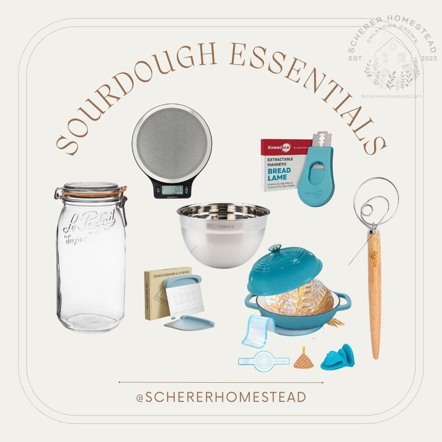
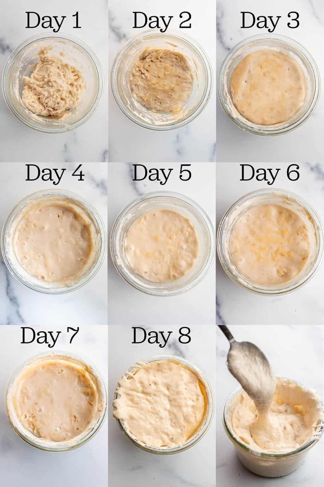
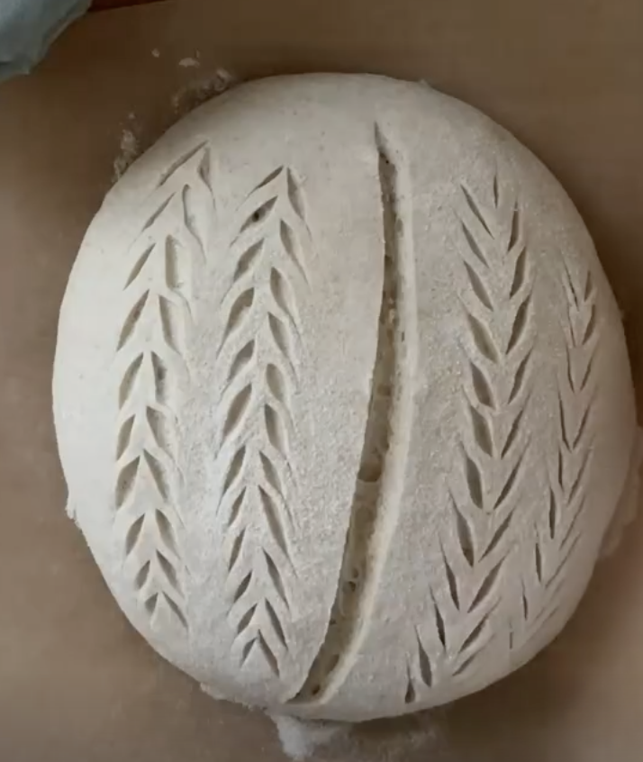
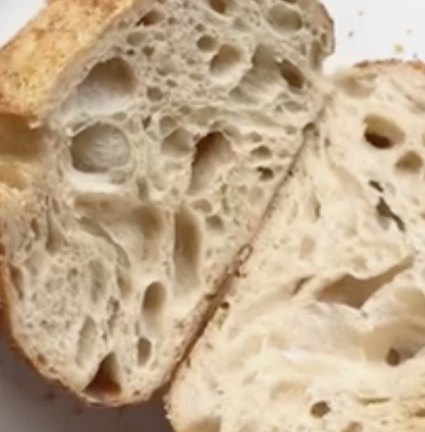

Welcome to your ultimate guide to mastering sourdough! In this blog, you'll learn how to create and maintain your own sourdough starter, troubleshoot common issues, and bake the perfect loaf. Let's get started!
Step 1: Gather Your Ingredients
You'll need:
- 500g bread flour
- 350ml water
- 100g sourdough starter
- 10g salt
Step 2: Mix the Dough

In a large bowl, combine the flour and water. Mix until no dry flour remains. Let it rest for 30 minutes to allow the flour to hydrate.
Step 3: Add the Starter and Salt
After the resting period, add your sourdough starter and salt. Mix well until fully incorporated.
Step 4: Bulk Fermentation
Cover the bowl with a damp cloth and let it rise at room temperature for 4-6 hours, or until it has doubled in size. Remember to stretch and fold the dough every 30 minutes during this time.
Step 5: Shape the Dough
Once the dough has risen, gently turn it out onto a floured surface and shape it into a round loaf. Let it rest for 30 minutes.
Step 6: Final Proofing
Place the shaped dough into a proofing basket and cover it. Let it proof for another 2-3 hours at room temperature, or overnight in the fridge for a more developed flavor.
Step 7: Bake the Bread
Preheat your oven to 450°F (230°C). Place a Dutch oven inside to heat up. Once hot, carefully transfer the dough into the pot, cover it, and bake for 30 minutes. Remove the lid and bake for an additional 15-20 minutes until golden brown.
Fun Facts About Sourdough
- Sourdough is one of the oldest forms of grain fermentation, dating back to ancient Egypt.
- The unique flavor of sourdough comes from the wild yeast and bacteria present in the starter.
- It’s believed that sourdough bread is easier to digest than commercial bread.
- Some bakers have kept their sourdough starters alive for decades, even centuries!